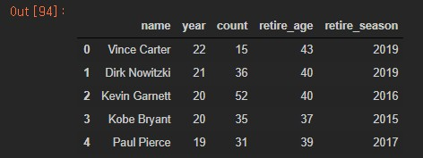

- 가져와야 할 데이터가 wikitable class로 되어있고 그 안에 tbody와 td, tr로 이루어져 있었다.
- 그거에 맞게 크롤링 구조를 구성하였다.
kaggle
위키백과
from urllib.request import urlopen
from bs4 import BeautifulSoup
from urllib.request import urlopen
from urllib.error import HTTPError
from urllib.error import URLError
import pandas as pd
from selenium import webdriver
import time
path = './driver/chromedriver.exe'
driver = webdriver.Chrome(path)
def craw():
time_list = ['2010-11','2011-12','2012-13','2013-14','2014-15','2015-16','2016-17','2017-18','2018-19','2019-20','2020-21']
day_list = ['2010','2011','2012','2013','2014','2015','2016','2017','2018','2019','2020']
name_list = []
age_list = []
year_list = []
cnt = 0
for day in time_list:
driver.get('https://en.wikipedia.org/wiki/List_of_'+str(day)+'_NBA_season_transactions')
page = driver.find_elements_by_css_selector('.wikitable')
page = page[0]
for i in page.find_elements_by_tag_name('tbody'):
k = i.find_elements_by_tag_name('tr')
for idx,j in enumerate(k):
if idx == 0:
continue
else:
td_list = j.find_elements_by_tag_name('td')
if len(td_list) == 6:
name_list.append(j.find_elements_by_tag_name('td')[1].text)
age_list.append(j.find_elements_by_tag_name('td')[3].text)
year_list.append(day_list[cnt])
elif len(td_list) == 5:
name_list.append(j.find_elements_by_tag_name('td')[0].text)
age_list.append(j.find_elements_by_tag_name('td')[2].text)
year_list.append(day_list[cnt])
cnt +=1
print(cnt)
return name_list, age_list, year_list
name_list, age_list, year_list = craw()
nba_df = pd.DataFrame({
'name' : name_list,
'age' : age_list,
'season' : year_list
})
nba_df.to_csv('./data/nba_df.csv',mode='w',index=False)
import pandas as pd
import numpy as np
import matplotlib as mpl
import matplotlib.pyplot as plt
import matplotlib.pylab as plt
import datetime
%matplotlib inline
import matplotlib
matplotlib.rcParams['axes.unicode_minus'] = False
import matplotlib.pyplot as plt
%matplotlib inline
import platform
import seaborn as sns
import warnings
warnings.filterwarnings('ignore')
from matplotlib import font_manager, rc
from matplotlib import style
if platform.system() == 'Darwin':
rc('font', family='AppleGothic')
elif platform.system() == 'Windows':
path = "c:/Windows/Fonts/malgun.ttf"
font_name = font_manager.FontProperties(fname=path).get_name()
rc('font', family=font_name)
else:
print('Unknown system... sorry~~~~')
nba_retire = pd.read_csv('nba_df.csv')
nba_all = pd.read_csv('all_seasons.csv')
nba_injury = pd.read_csv('injuries_2010-2020.csv')
def info(df):
display(df.describe())
display(df.info())
display(df.isna().sum())

nba_all.drop('Unnamed: 0',axis=1,inplace=True)
nba_injury_sum = nba_injury.groupby('Relinquished', as_index=False).agg({'Notes':'count'}).sort_values('Notes',ascending=False).reset_index(drop=True)
nba_player = nba_all.groupby('player_name',as_index=False).agg({'season':'count'}).sort_values('season',ascending=False).reset_index(drop=True)
nba_1020_injury = pd.merge(nba_player,nba_injury_sum,left_on='player_name',right_on='Relinquished')
nba_1020_injury.drop('Relinquished',axis=1,inplace=True)
nba_retire_merge = pd.merge(nba_1020_injury, nba_retire,left_on='player_name',right_on='name')
nba_retire_merge.drop('name',axis=1,inplace=True)
nba_retire_merge.columns=['name','year','count','retire_age','retire_season']
nba_retire_merge.head()

nba_retire_merge.describe()

def corr(data,text):
corr = data.corr(method='pearson')
display(corr)
style.use('ggplot')
plt.title(text)
sns.heatmap(data = corr, annot=True, fmt = '.2f', linewidths=.5, cmap='Blues')
corr(nba_retire_merge,'상관관계')


nba_retire_merge.sort_values('count',ascending=False).head(10).reset_index(drop=True)

2010~2020년 사이에 은퇴한 선수들의 데뷔초부터 부상정보를 가져오기 위해 다시 크롤링 하였다.
from urllib.request import urlopen
from bs4 import BeautifulSoup
from urllib.request import urlopen
from urllib.error import HTTPError
from urllib.error import URLError
import pandas as pd
from selenium import webdriver
import time
path = '../driver/chromedriver.exe'
driver = webdriver.Chrome(path)
def craw(start,end):
page_list = [ i for i in range(start,end,25)]
Date = []
Team = []
Acquired = []
Relinquished = []
Notes = []
for page in page_list:
driver.get('http://www.prosportstransactions.com/basketball/Search/SearchResults.php?Player=&Team=&BeginDate=1998-01-01&EndDate=2020-12-31&ILChkBx=yes&Submit=Search&start='+str(page))
page = driver.find_elements_by_css_selector('.datatable')
if len(page) != 0:
for i in page[0].find_elements_by_tag_name('tbody'):
k = i.find_elements_by_tag_name('tr')
for data in k:
ll = data.find_elements_by_tag_name('td')
Date.append(ll[0].text)
Team.append(ll[1].text)
Acquired.append(ll[2].text)
Relinquished.append(ll[3].text)
Notes.append(ll[4].text)
return Date,Team, Acquired,Relinquished, Notes

Date,Team, Acquired,Relinquished, Notes = craw(0,5001)
Date1,Team1, Acquired1,Relinquished1, Notes1 = craw(5001,10001)
Date2,Team2, Acquired2,Relinquished2, Notes2 = craw(10001,15001)
Date3,Team3, Acquired3,Relinquished3, Notes3 = craw(15000,20001)
Date4,Team4, Acquired4,Relinquished4, Notes4 = craw(20001,25001)
Date5,Team5, Acquired5,Relinquished5, Notes5 = craw(25001,28526)
df1 = pd.DataFrame({
'Date':Date,
'Team' : Team,
'Acquired' : Acquired,
'Relinquished' : Relinquished,
'Notes' : Notes
})
df1.to_csv('df1.csv',mode='w',index=False)
nba_injury_1998 = pd.concat([df1,df2,df3,df4,df5,df6])
drop_index = list(nba_injury_1998[nba_injury_1998['Date']==' Date'].index)
nba_injury_1998 = nba_injury_1998.drop(drop_index).reset_index(drop=True)
none_Relinquished = list(nba_injury_1998[nba_injury_1998['Relinquished'] ==''].index)
nba_injury_1998 = nba_injury_1998.drop(none_Relinquished).reset_index(drop=True)
nba_injury_1998 = nba_injury_1998.drop(['Acquired'],axis=1)
nba_injury_1998.to_csv('nba_injury_1998.csv',mode='w',index=False)
for i in range(nba_injury_1998.shape[0]):
if nba_injury_1998.loc[i,'Relinquished'] != '':
nba_injury_1998.loc[i,'Relinquished'] = nba_injury_1998.loc[i,'Relinquished'].split('•')[1].strip()
nba_injury_1998.loc[i,'Date'] = nba_injury_1998.loc[i,'Date'].strip()
nba_injury_1998.loc[i,'Team'] = nba_injury_1998.loc[i,'Team'].strip()
nba_injury_1998.loc[i,'Notes'] = nba_injury_1998.loc[i,'Notes'].strip()
if nba_injury_1998.loc[i,'Relinquished'] =='':
nba_injury_1998.loc[i,'Relinquished'] = nba_injury_1998.loc[i,'Relinquished']
nba_injury_1998.loc[i,'Date'] = nba_injury_1998.loc[i,'Date'].strip()
nba_injury_1998.loc[i,'Team'] = nba_injury_1998.loc[i,'Team'].strip()
nba_injury_1998.loc[i,'Notes'] = nba_injury_1998.loc[i,'Notes'].strip()
• Elliot Williams 데이터 앞에 기호와 띄어쓰기가 있어서 정리해주었다. 다른 행도 띄어쓰기를 정리하였다.for i in range(nba_injury_1998.shape[0]):
data = nba_injury_1998.loc[i,'Notes'].split('with')
print(data)
if data[0] in ['placed on IL ','placed on IR ']:
nba_injury_1998.loc[i,'Notes2'] = data[1].strip()
else:
nba_injury_1998.loc[i,'Notes2'] = nba_injury_1998.loc[i,'Notes']
name_list = nba_retire.groupby(['name']).count().sort_values('age',ascending=False)
name_list = list(name_list[name_list['age'] == 2].index)
name_lis
>
['Keyon Dooling',
'Rasheed Wallace',
'Elton Brand',
'Nazr Mohammed',
'Brandon Roy',
'Nick Collison',
'Boštjan Nachbar']
index_list = []
while len(name_list) > 0:
cnt = len(name_list)
for idx, value in nba_retire.iterrows():
if value[0] in name_list:
index_list.append(idx)
name_list.remove(value[0])
nba_retire = nba_retire.drop(index_list).reset_index(drop=True)
nba_player = nba_all.groupby('player_name',as_index=False).agg({'season':'count'}).sort_values('season',ascending=False).reset_index(drop=True)
nba_01 = pd.merge(nba_retire, nba_player, left_on='name', right_on='player_name',how='left').sort_values('season_y').reset_index(drop=True)
nba_01 = nba_01.drop(['season_x','player_name'],axis=1).rename({'season_y':'season'},axis=1)
name_list = ['Rasho Nesterovic','Zydrunas Ilgauskas','Peja Stojakovic','T.J. Ford','Eduardo Najera','Vladimir Stepania','Darko Milicic',
'Hedo Turkoglu','Kosta Perovic','Raul Lopez','Andres Nocioni','Primoz Brezec','Bostjan Nachbar','Jiri Welsch',
'PJ Hairston','Manu Ginobili','Mike Dunleavy','Mirza Teletovic','Gerald Henderson','Jose Calderon','Kevin Seraphin']
cnt = 0
for i in range(155,176):
nba_01.loc[i,'name'] = name_list[cnt]
cnt += 1
은퇴 정보와 player정보를 합쳐서 어떤 선수의 정보가 합쳐지지 않았는지 확인하고 nba_all 원래 파일에 이름을 대조하여 리스트를 만들었다.
nba_02 = pd.merge(nba_01, nba_player, left_on='name', right_on='player_name').drop(['season_x','player_name'],axis=1).rename({'season_y':'season'},axis=1)
nba_injury_sum = nba_injury.groupby('name', as_index=False).agg({'Notes':'count'}).sort_values('Notes',ascending=False).reset_index(drop=True)
import re
re.split('[/)]',nba_injury_sum.loc[0,'name'])